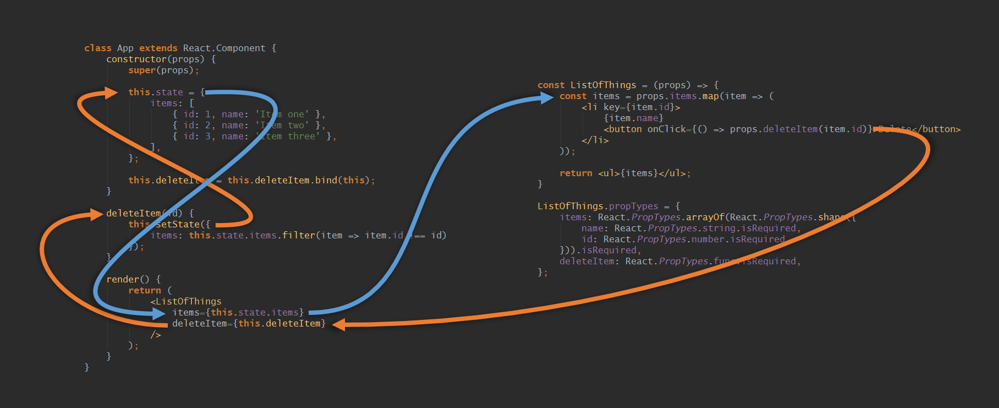
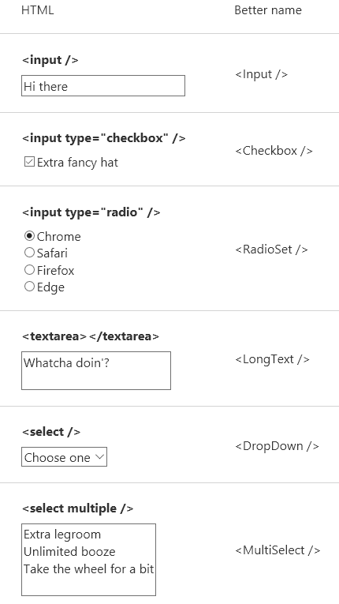
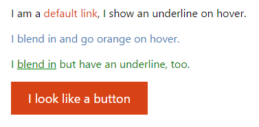
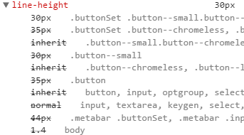
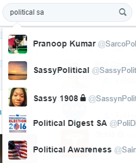

10个React迷你模式
在过去的几年里，我做了不少大小适中的React项目，以及相当多的小型项目。在这段奇妙的旅程中，我发现有一些模式是我自己经常重复使用的。
因为模式就是这样的。
它们是各种各样的我希望我第一天学React就听到的东西。因此如果你今天刚学React，那么你走运了。
或者你不是。识破的方式只有一种。。。
这是很长的一篇文章，但是是以列表形式的，因此你可以跳过一些无聊的（3,6,8,10）。
1.往上或者向下传递数据
我向每个React新手推荐的一点是理解往下传递数据（以对象、字符串等形式）和往下传递方法来让子组件反过来往上传递数据这个模式。
就像给困在地下的矿工们降下一包炸薯条和一个对讲机。
图片看起来是怎样的？下面就是这个模式的最简单的形式。

一图胜千言
左边是父组件，右边是子组件。你可以认为这两个prop将这两个组件联系起来，允许数据从任一方流向另一方。
名为items的prop往下传递数据给子组件。名为deleteItem的prop给了子组件往上传递数据给父组件的一种方式（“嘿，请删掉这一项”）。
这并不是真正意义上的模式。
但是剩下的都是模式，我保证。
2.调整HTML的输入框
大体上，React和WebComponent了不起的地方之一是如果html的某些东西不以你希望的形式工作，你可以矫正它们。
如果你回想下用于用户输入的各种元素（现在就做），你马上就会发现这些的元素的命名毫无道理，近乎轻率。
如果我搭建一个会有许多输入框的网站，我首先做的事情之一是调整它们。

但是这也不完全是为了装点门面，还有许多地方可以改进：
输入框应该通过
onChange方法返回一个值，而不是一个JavaScript的Event实例，不是吗？你可以更进一步保证
onChange返回的数据类型和传入的类型相匹配。如果传入的typeof props.value是number，那么在数据返回之前将e.target.value转成number类型。一组单选框功能上与一个
<select>相同，对吧？仅仅因为UI的不同就以完全不同的方式对待它们是一件很糟糕的事。也许对你的app来说更合理的是有一个<PickOneFromMany />，并且可以传入ui="radio"或者ui="dropDown"。
重要的不是要做的和我一样，而是要形成你自己的东西——你不需要一直使用本身有点儿坑的HTML输入框来工作。
3.用唯一ID将标签绑定到输入框
关于输入框的话题，如果你关心你的用户，你会通过一个id/for组合将你的<label>元素绑定到你的<input>元素。
但是你不会想去给你声明的每个输入框都想出一个巧妙的唯一ID，谁有时间做这个？我不知道你是怎样，但我还有山羊视频要看。
（给飞行常客的点子：如果你在航班上碰到了大哭大闹的孩子，闭上你的眼睛，假装你在观看youtube上一个叫起来有点像人的山羊的视频），恼人的声音变得令人捧腹。）
回到正题。你可以给每个input/label对生成随机的ID，但是这样客户端渲染的HTML会和服务端渲染的HTML不匹配。检验和错误！这可不好。
因此，你可以创建一个提供递增ID的小模块，并且在Input组件里面像这样使用：
|
|
如果getNextId()仅仅是在每次调用它的时候自增，那么在服务端渲染的时候，ID的值会一直增加，直到最终达到Infinity。因此，你会期望在每次渲染你的app的时候（对于每个网络请求）重置ID。
你可在你的app的入口做这个事，使用一个简单的resetId()，或者任何你认为最合适的名字。
把这些都考虑进去，你的这个超级别致的模块看起来可能是这样的：
|
|
4.用props控制CSS
当你想给不同的实例应用不同的CSS的时候（例如按钮的‘primary’和‘secondary’），你可以传入props来控制使用哪个CSS。
表面上，这看起来超级简单，但我向你保证这有很多种错误的方式（我全都尝试过了！）。
在我看来，控制应用到组件上的CSS的方式有3种。
使用主题
为了把一堆CSS声明语句分组，你可以借助“主题”这个概念，比如primary或secondary按钮的例子：
|
|
尽你的最大努力保证一个组件只引用一个主题。
使用flag
也许你的一些按钮有圆角，但这不直接与你定义的主题相关。
对于这种情形，你或者可以坐下来和你的设计师一起聊聊一致性，或者添加一个看起来是这样的布尔值prop：
|
|
和HTML的二元属性一样，你不需要写成rounded={true}。
设置值
部分情形下你也许会想直接传入一个CSS属性的值（在组件里你会将它设置为行内样式）。
|
|
一个例子
假设你要创建一个link组件。你审查你的网站的设计稿，总结出会有3种主题，而且有时候会有下划线，有时候又没有。

这是我如何设计这个组件：
|
|
及其CSS
|
|
你也许注意到了link--no-underline奇怪的双负号。
故事时间：以前我认为写越少行的CSS越好，但并不是这样的。我宁愿写一些双负号和多个选择器规则，只要这意味着可以用一种更有层次的方式应用样式。
我确信我曾经说过拓展网站最困难的部分是CSS。JavaScript是容易的，但对于CSS你要为你的错误买单——一旦混乱开始了，回到不混乱就不容易了。
事实上：对于网页开发者最致命的是与CSS优先级做斗争。如果你在电脑上，可以去检查下medium顶部导航上的小小的通知icon的CSS样式。
如果你不是，或者你比较懒，那么猜下这个里面有数字的圆圈由多少条的CSS规则组成？
23条。
这还不包含从其他11条规则继承的样式。
仅line-height这个属性就复写了9次。

如果line-height是只猫，那么它现在已经死了。
维护它可不会是令人开心的事。
有了React我们可以做的更好。我们可以慎重地构思哪些class要应用到我们的组件上。我们可以移除全局reset，并将它们移到我们的Button.scss里。我们可以不再依靠优先级以及文件的顺序。
旁注：我梦想有一天我们能告诉浏览器我们一点也不想要浏览器预定义的样式。::user-agent-styles: none-whatsoever;——请实现它吧，浏览器厂商们。[编辑：评论里有一位聪明的同学指出了all: unset也许能治愈我的痛苦。]
5.switching组件
一个switching组件指一个渲染多个组件中某一个的组件。
这可以是一个<Page/>组件，展示分页中的一页。或者是tab组件的tab，又或者是一个模态框组件的不同形态。
以前我使用switch语句，接着发展成往组件里面传入我要渲染的东西。然后转向从组件本身导出其他组件的引用（使用命名导出，然后是作为组件的属性）。
这些全都是糟糕的点子。
我最终决定使用的潜在可能是糟糕的方式是使用一个对象将prop值映射到组件。
|
|
PAGES对象的键可以在propTypes里面使用，用于捕捉开发时的错误。
当然，接下来我们可以像这样使用<Page page="home" />。
如果你把键home、about和user替换成/、/about和/user，那么你得到了一个router的半成品。
（未来的想法：移除react-router。）
6.访问组件内部
如果你在寻找一个简单的方式来取悦你的用户，试着每到一个新页面时往他们最可能输入的input框添加autofocus。真的就这么简单。
也许你正好有个登陆表单并且——作为一个交互体验的专家——你想把那个小小的闪烁的鼠标指针放到“用户名”框里。
但不巧的是，这个表单是在用户点击“登陆”按钮后弹出的模态框里面的，而autofocus属性只在页面刚加载完后有效。
那么接下来你会怎么做！
你会通过编码的方式来聚焦那个元素，仅此而已。所以接下来你可能会给input框一个id，然后写下document.getElementById('user-name-input').focus()。
这是可行的，但不是正确的方式。在你的app里面有越少的东西依赖于匹配两个字符串越好。
幸运的是，有一个简单的方式可以来“恰当地”做这个事：
|
|
突然间，Input组件有了一个focus()方法可以用来聚焦HTML元素。
在父组件里面，我们可以得到Input组件的一个引用，然后调用它的focus()方法。
|
|
注意当你使用一个组件的ref时，它引用的就是组件本身（而不是底层的元素），因此你可以访问到组件的方法。
7.Almost组件
假设说你在做一个可以筛选人的组件。当你输入的时候，你可以看到一组候选人的名字和照片。比如这样。

（我搜索政治讽刺家是因为我和其他人一样，非常感兴趣别人如何看待政治。）
当设计这个组件的时候，你可能会这么想：是否需要将列表的每一项本身设计成SearchSuggestion组件？它仅仅是几行的HTML和CSS，因此也许不该这么做？然而曾经有人告诉我：“如果拿不准，就新建一个组件吧”。
天啊，那可真是碍手碍脚的，不是吗？
如果是我，我不会单独新建一个组件。取而代之，只用一个renderSearchSuggestion函数来给每一项返回合适的DOM结构。接着我就可以生成结果，就像这样：
|
|
如果东西变得复杂，或者你想在其他地方用这个组件，通过拷贝和粘贴代码可以容易新建一个组件。
不要过早组件化。组件不像茶匙，不经意就会过量了。
我说的不是：“把你认为应该组件的东西变成其父组件的一部分”。
而是：“把你认为不应该是组件的东西变得有点儿像个组件（如果可以的话）”。
8.用于格式化文本的组件
当我开始用React的时候，我认为组件是重的，一种用于将DOM划分为有组织块的方式。然而组件用于格式化也可以工作的很好。
这儿有一个<Price>组件，它接收一个数字并且返回一个带或者不带小数和‘$’符号的字符串。
|
|
如你所见，我使用了Intl这个强大的格式化字符串库，这是他们网站的链接。
应当指出（在一些小伙子这么干之前），这里不是为了节省几行代码。用函数同样可以很容易完成这个任务（当然组件只是有不同形式括号的函数）。
使用函数的代码更少，但在我看来，不是那么友好了：
|
|
注意上面的两种方式我都没有检查数字是否合法。这是因为。。。
9.store是组件的仆人
这样的代码也许我已经写了数千次了：
|
|
（有人告诉我夸张了如果说是输亿万次。）
最近我觉得如果我像这样去做检查，那么我做错了。我想知道“用户是否登陆了？”，而不是“该用户的登陆状态是否等于SIGNED_IN?”。
我的组件们在它们的生命周期里要承担足够的工作，它们不应该用它们小小的脑袋来担忧这样的问题。它们不该关心价格是否以数字型传入，也不该关心布尔值传入了单词’true’。
如你所见，如果你的store里面的数据设计的和你的组件相匹配，那么你的组件将会更加简单。并且正如我说过的，bug隐藏于复杂的事物。如果你的组件拥有更低的复杂度，那么导致bug的可能性也更低。
然而复杂度总会转移到某些地方，不是吗？
我的建议是：
设计出你的组件以及它们所需数据的大致结构
设计出满足这些需求的store
对输入的数据做任何你所需要做的以让它适应store
针对最后一点，我推荐用一个单独的模块来做输入数据转换（oh la la）。属性重命名，字符串转为数值型，对象转为数组，日期字符串转为日期对象，等等。
在一个地方做所有的操作，并且对它做单元测试，找出质量不达标的部分。
如果是一个react/redux配置，那么你接着可以在一个获取查找结果的action creator里面这么做：
|
|
你的组件会对此表示感谢的。
10.不用相对路径引用组件
如果可以不用这么做：
|
|
而是这么做：
|
|
不是很好吗？
理论上你可以这么做：
在某个地方新建一个
index.js，用它导出你的每个组件的引用使用webpack的
resolve.alias将Components指向那个index文件
我并没有这么做过，并且原本计划用我的现存的一个app做试验。然而当我写完代码时我意识到这是一个糟糕的主意，理由如下：
会是一个
eslint错误，因为Components不在node_modules里面。如果你使用一个好IDE，它会了解你的组件的细节。你会得到智能的提示如果你没有提供required的prop，以及用cmd/ctrl+单击打开那个组件文件的能力。事情是如此自然。然而如果你像上面这么做了，你的IDE就不再能知道去哪找那个组件，然后你会失去这些智能的功能。
![./import_components_relative.png]
感谢Webstorm。
Edit：matthew hsiung在这个评论里提供了eslint和webstorm的问题的解决方案。
总结
这可真是相当多的内容。我很确信让我用一年来看这些东西会皱眉头。也许你今天就这么做了。或者也许你会分享一些对你有帮助的东西。